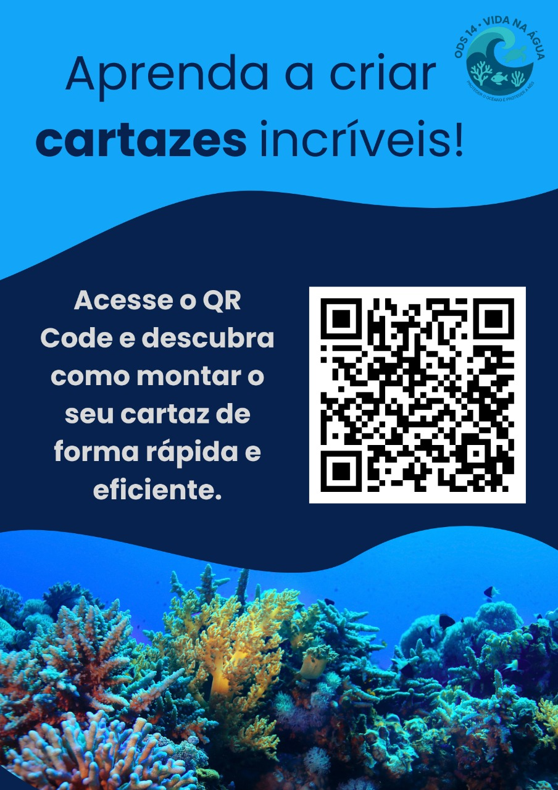
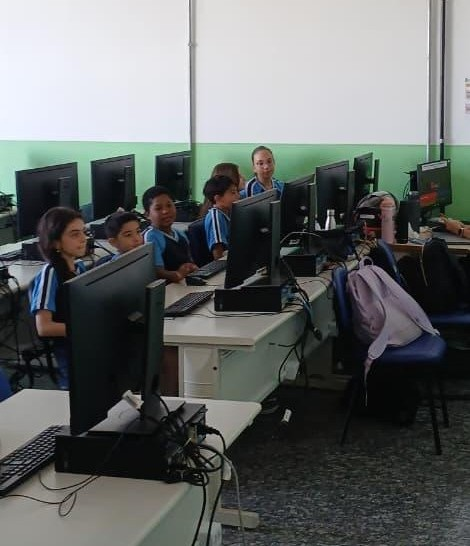
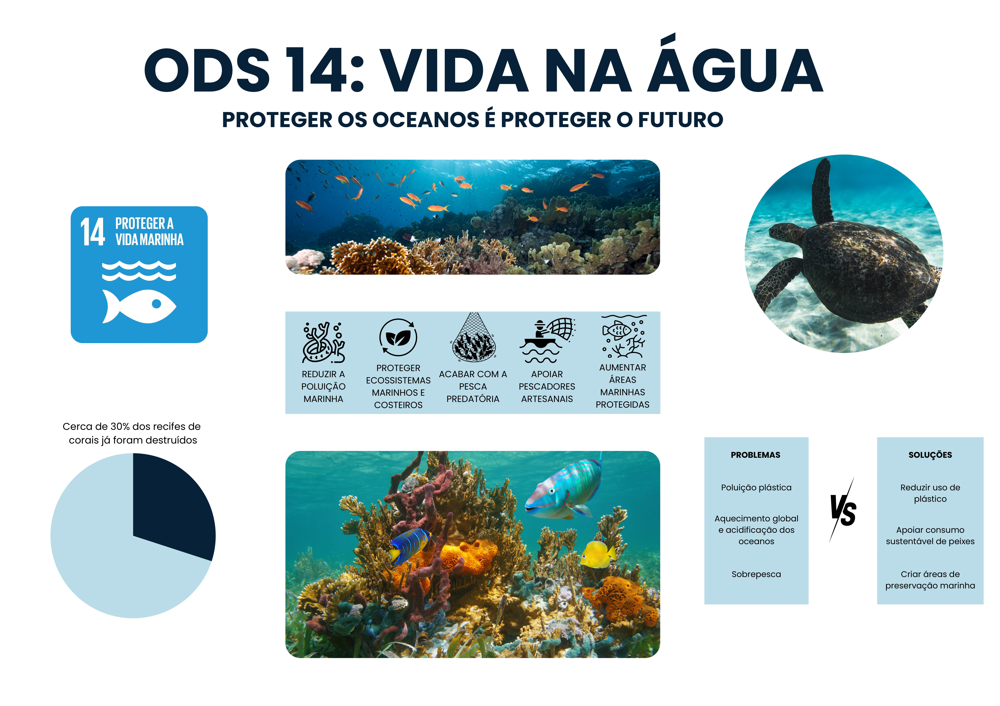
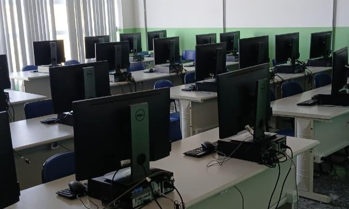
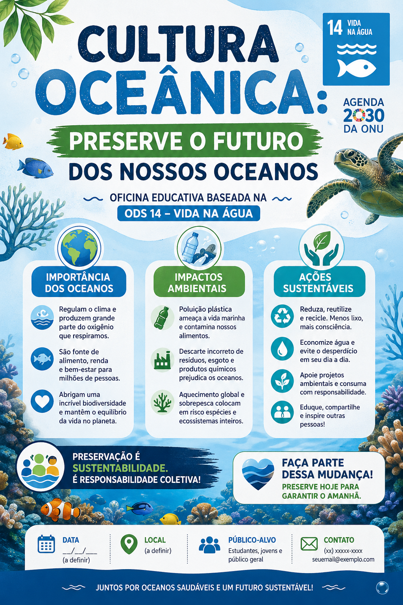
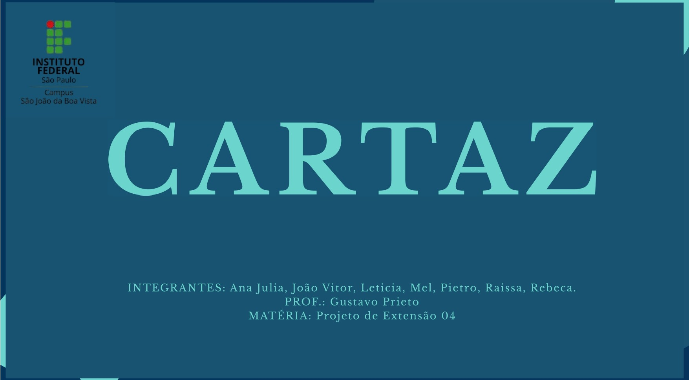
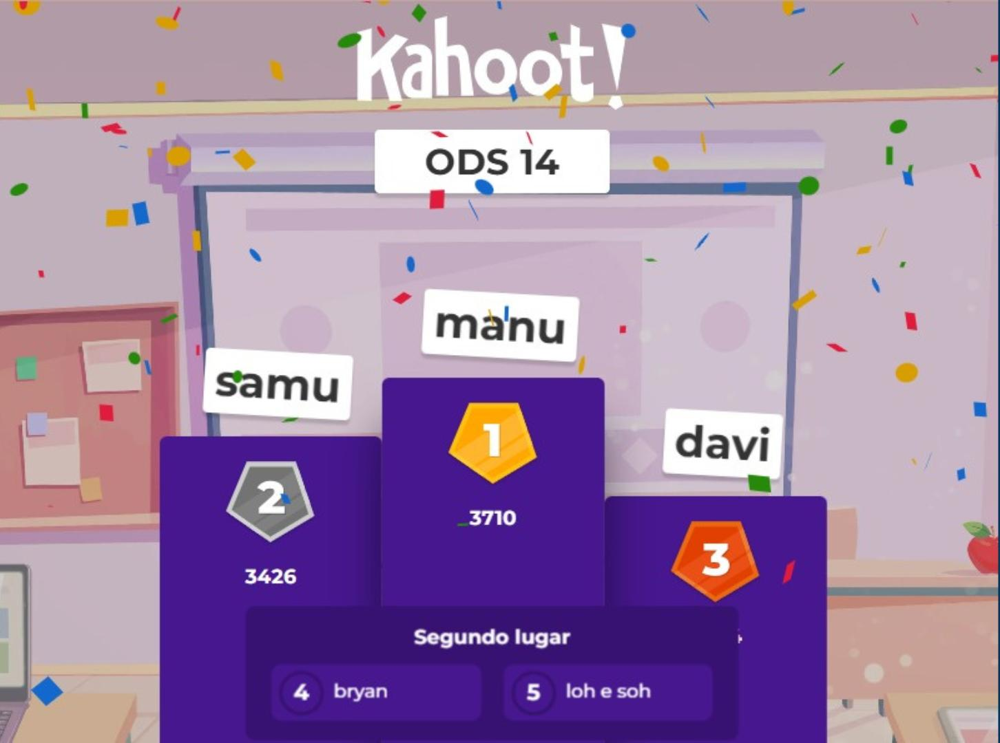
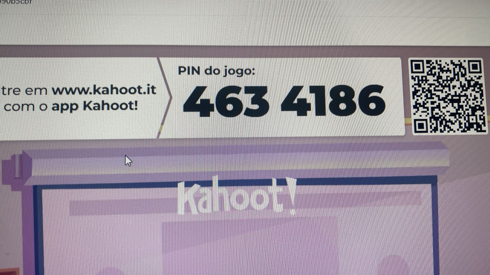
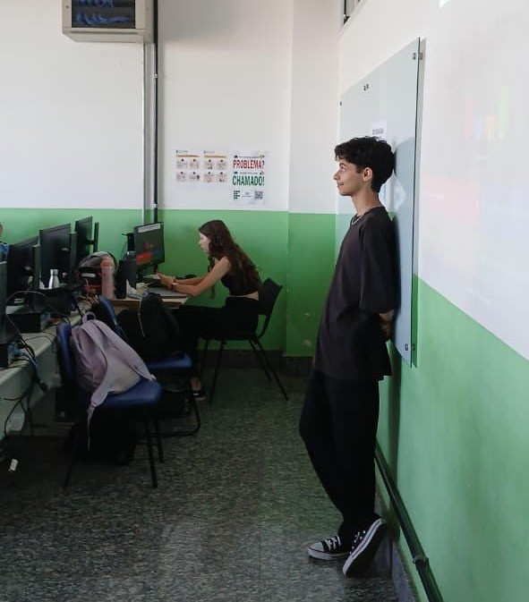

Portfólio Educacional · 2026
Uma jornada visual criada com Inteligência Artificial para educar, engajar e inspirar a consciência ambiental marinha nas escolas brasileiras.
01 — Objetivo
Este projeto tem como objetivo desenvolver a consciência oceânica em estudantes do Ensino Fundamental e Médio, fundamentado na ODS 14 – Vida na Água, integrante da Agenda 2030 da ONU.
O oceano cobre mais de 70% da superfície do planeta, regula o clima e garante recursos essenciais como alimento, oxigênio e meios de subsistência. Buscamos transformar conceitos científicos em aprendizado ativo por meio de cartazes educativos e reflexão coletiva.
Capacitar estudantes do Ensino Fundamental e Médio a compreenderem a Cultura Oceânica por meio de atividades pedagógicas ativas: elaboração de cartaz educativo com título, imagens e ações práticas; e um momento de feedback e reflexão coletiva.
Mensagem central: "Proteger o oceano é proteger a nós mesmos."
A importância do cartaz
Criar um cartaz desenvolve a capacidade de sintetizar ideias, organizar informações visualmente e comunicar mensagens com clareza — estimulando criatividade, pensamento crítico e trabalho em equipe.
Profissionais de marketing, design, saúde e educação usam cartazes para informar e engajar públicos. A comunicação visual eficaz é um diferencial competitivo valorizado pelo mercado.
Campanhas ambientais, de saúde e de direitos humanos dependem de cartazes para sensibilizar comunidades — provando que uma boa mensagem visual pode gerar transformação real.
Neste projeto, a elaboração do cartaz sobre Cultura Oceânica não é apenas uma atividade escolar — é um treino real de comunicação visual com propósito ambiental, preparando os estudantes para agir como cidadãos e futuros profissionais conscientes.
02 — Descrição
O grupo desenvolveu uma oficina educativa sobre Cultura Oceânica durante a Semana de Tecnologia do IFSP, aplicando conceitos de Interação Humano-Computador no design de um cartaz ambiental — transformando conhecimento científico em comunicação visual acessível e impactante.
A atividade foi estruturada em quatro momentos, atendendo aproximadamente 25 a 30 participantes entre crianças e jovens de escolas visitantes e alunos do IF.



03 — ODS
O projeto se articula com múltiplos ODS da Agenda 2030 da ONU, contribuindo para metas globais de educação, conservação marinha e ação climática.
Conscientização sobre conservação e uso sustentável dos oceanos e recursos marinhos.
Promoção de aprendizagem inclusiva, equitativa e de qualidade para todos os estudantes.
Fortalecimento da resiliência e da capacidade adaptativa às mudanças climáticas.
Fortalecimento dos meios de implementação e revitalização da parceria global.
04 — BNCC
O projeto está alinhado a competências e habilidades da BNCC, promovendo aprendizagens integradas entre Língua Portuguesa, Ciências, Geografia e Arte, com foco na educação ambiental e na comunicação visual.
EF69LP07 — Produção de cartazes considerando contexto, público, linguagem verbal e visual, com planejamento, revisão e edição.
EF07CI08 — Analisar impactos ambientais em ecossistemas, especialmente relacionados aos oceanos e à biodiversidade.
EF05GE10 — Reconhecer formas de poluição dos oceanos e seus impactos socioambientais.
EF69AR04, EF69AR05 e EF69AR06 — Explorar elementos visuais, experimentar técnicas artísticas e desenvolver processos de criação na produção de cartazes.
CG04 e CG05 — Utilizar diferentes linguagens e tecnologias digitais para comunicar ideias e produzir conhecimento.
CG07 — Argumentar com base em informações confiáveis, promovendo a consciência ambiental e o cuidado com o planeta.
Competência 6 — Utilizar diferentes linguagens e tecnologias para comunicar conhecimentos científicos de forma crítica e ética.
05 — Galeria
Registros das etapas de criação, cartaz produzido e momentos de apresentação.






06 — Demonstração
Assista ao vídeo demonstrando como criar um cartaz educativo no Canva, desde a escolha do layout até a finalização do design.
A demonstração apresenta, de forma prática, o processo de criação, destacando decisões de layout, uso de elementos visuais e estratégias de organização da informação.
↓ Baixar relatório07 — Criação com IA
Este projeto também demonstra como a Inteligência Artificial pode ser utilizada na criação de cartazes educativos, ampliando as formas de comunicar a Cultura Oceânica de maneira visual, clara e envolvente.
A proposta é mostrar que qualquer estudante ou educador pode produzir materiais com qualidade visual utilizando IA — mesmo sem experiência em design.
Com um prompt bem estruturado, é possível orientar a IA para organizar informações, aplicar estilos visuais adequados e gerar um cartaz pronto para uso em poucos segundos.
O processo segue a mesma lógica trabalhada no projeto:
Ao lado está o modelo de prompt desenvolvido no projeto. Ele pode ser reutilizado e adaptado para diferentes temas e contextos educacionais:
A partir desse modelo, é possível criar variações, adaptar conteúdos e produzir novos cartazes de forma rápida e acessível.
Mais do que gerar imagens, o objetivo é desenvolver autonomia, pensamento crítico e uso consciente da tecnologia.
Crie um cartaz visualmente atraente, limpo, organizado e altamente
legível sobre o tema: (TEMA DO CARTAZ).
Objetivo do cartaz: (informar / divulgar / promover / educar /
alertar / vender).
Público-alvo: (crianças / jovens / adultos / profissionais /
estudantes / público geral / específico: ______).
Estilo visual: (moderno / minimalista / corporativo / criativo /
elegante / futurista / retrô / acadêmico / vibrante / clean).
Paleta de cores: (tons neutros / cores vibrantes / pastel /
monocromático / alto contraste / baseado em: ______).
Tipografia:
- Título: (negrito / grande / chamativo / moderno)
- Texto: (simples / legível / profissional)
Estrutura do cartaz:
- Título principal: curto, impactante e claro
- Subtítulo: opcional, complementar
- Seções organizadas com subtítulos
- Lista ou tópicos (se necessário)
- Destaques visuais para informações importantes
Conteúdo:
Inclua informações relevantes, claras e organizadas sobre (TEMA).
Use linguagem (formal / informal / acessível / técnica).
Evite excesso de texto — priorize objetividade.
Elementos visuais:
- (ícones / ilustrações / gráficos / imagens realistas /
abstratas)
- Alinhados com o tema e estilo escolhido
- Evitar poluição visual
Layout:
- Uso adequado de espaço em branco
- Alinhamento equilibrado
- Hierarquia visual clara (título > subtítulo > conteúdo)
Formato:
(cartaz vertical / horizontal / A4 / A3 / redes sociais / banner
digital)
Extras (opcional):
- Chamada para ação: (ex: "Participe", "Saiba mais",
"Inscreva-se")
- Data, local ou contato (se aplicável)
- Logo ou marca (se necessário)
Restrições:
- Não poluir o design
- Garantir alta legibilidade
- Manter equilíbrio entre texto e imagem
Renderização:
Renderizar em alta qualidade, com aparência profissional, iluminação
equilibrada e design digno de portfólio.
Resultado esperado:
Um cartaz bonito, profissional, organizado e fácil de entender, com
forte impacto visual e clareza na comunicação.
Crie um cartaz visualmente atraente, limpo, organizado e altamente
legível sobre o tema:
Oficina educativa sobre Cultura Oceânica baseada na ODS 14 – Vida na
Água, da Agenda 2030 da ONU.
Objetivo do cartaz: educar e sensibilizar o público sobre a
importância da preservação dos oceanos e práticas sustentáveis.
Público-alvo: estudantes, jovens e público geral interessado em meio
ambiente.
Estilo visual: moderno, clean e educativo, com toque criativo e
inspirador.
Paleta de cores: tons de azul e verde (remetendo ao oceano), branco
para contraste e detalhes em cores suaves.
Tipografia:
- Título: grande, chamativo, moderno e em negrito
- Texto: simples, legível e profissional
Estrutura do cartaz:
- Título principal: "Cultura Oceânica: Preserve o Futuro dos Nossos
Oceanos"
- Subtítulo: "Oficina educativa baseada na ODS 14 – Vida na Água"
- Seções organizadas com subtítulos:
• Importância dos oceanos
• Impactos ambientais
• Ações sustentáveis
- Lista ou tópicos curtos para facilitar a leitura
- Destaques visuais para palavras-chave como "preservação",
"sustentabilidade" e "responsabilidade coletiva"
Conteúdo:
Inclua informações claras e objetivas sobre a importância dos
oceanos para o planeta, os impactos da poluição marinha e a
necessidade de práticas sustentáveis.
Destaque a responsabilidade coletiva na preservação da vida
marinha.
Use linguagem acessível e educativa.
Evite excesso de texto — priorize clareza e impacto.
Elementos visuais:
- Ilustrações de oceano, vida marinha (peixes, tartarugas,
corais)
- Ícones ambientais e sustentáveis
- Elementos gráficos suaves como ondas ou bolhas
- Visual harmônico sem poluição
Layout:
- Uso equilibrado de espaço em branco
- Alinhamento organizado e limpo
- Hierarquia visual clara (título > subtítulo > conteúdo)
Formato:
cartaz vertical A4 ou para redes sociais
Extras:
- Chamada para ação: "Faça parte dessa mudança!" ou "Preserve hoje
para garantir o amanhã"
- Espaço para data, local e contato da oficina
- Inserir referência à Agenda 2030 da ONU (ODS 14)
Restrições:
- Não poluir o design
- Garantir alta legibilidade
- Manter equilíbrio entre texto e imagem
Renderização:
Renderizar em alta qualidade, com aparência profissional, iluminação
equilibrada e design digno de portfólio.
Resultado esperado:
Um cartaz educativo, bonito e impactante, que transmita claramente a
importância da Cultura Oceânica e motive o público a adotar práticas
sustentáveis.